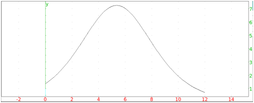

8.2.9 Logistic regression: logistic_regression logistic_regression_plot
Differential equations of the form y′ = y(a*y + b) come up often,
particularly when studying bounded population growth. With the
initial condition y(x0) = y0, the solution is the logistic equation
| y = | | −b*y0 |
|
| a*y0 − (a*y0+b)exp(b(x0−x)) |
|
|
However, you often don’t know the values of a and b.
You can approximate these values given (x0,y0) and
[y′(x0),y′(x0+1),…,y′(x0+n−1)] by taking the initial value
y(x0) = y0 and the approximation y(t+1) ≈ y(t) + y′(t) to
get the approximations
|
| | y(x0+1) | ≈ y0 + y′(x0) | | | | | | | | | |
|
y(x0+2) | ≈ y0 + y′(x0) + y′(x0+1) | | | | | | | | | |
|
⋮ | | | | | | | | | | |
|
y(x0+n) | ≈ y0 + y′(x0) +… y′(x0+n−1)
| | | | | | | | | |
|
Since y′/y = a + by, you can take the
approximate values of y′(x0+j)/y(x0+j) and use linear interpolation
to get the best fit values of a and b, and then solve the
differential equation.
The logistic_regression command uses this approach to find the best fit logistic
equation for given data.
-
logistic_regression takes three arguments:
-
L, a list representing [y10,y11,…,y1(n−1)],
where y1j represents the value of y′(x0 + j).
- x0, the initial x value.
- y0, the initial y value.
- logistic_regression(L,x0,y0)
returns a list [y,y′,C,ymax,xmax,R,Y] where
y is the logistic function, y′ is the derivative,
C=−b/a, ymax is the maximum value of y′,
xmax is where y′ has its maximum, R is linear
correlation coefficient R of Y=y′/y as a function of y with Y=a*y + b.
Example
Input:
logistic_regression([0.0,1.0,2.5],0,1)
Output:
Pinstant=0.132478632479*Pcumul+0.0206552706553 |
Correlation 0.780548607383, Estimated total P=-0.155913978495 |
Returning estimated Pcumul, Pinstant, Ptotal, Pinstantmax, tmax, R
|
|
| ⎡
⎢
⎢
⎣ | | − | | 0.155913978495 |
|
| 1+e | | −0.0554152581707 x+ | ⎛
⎝ | 0.140088513344+3.14159265359 i | ⎞
⎠ |
|
| |
|
|
| , |
| | | | | | | | | |
| | | − | | 0.00161022271237 |
|
| 1+cos | ⎛
⎝ | −i | ⎛
⎝ | −0.0554152581707 x+ | ⎛
⎝ | 0.140088513344+3.14159265359 i | ⎞
⎠ | ⎞
⎠ | ⎞
⎠ |
|
| , |
| | | | | | | | | |
| | −0.155913978495,−0.000805111356186,2.52797727501+56.6918346552 i, | | | | | | | | | |
| | | | | | | | | | | |
|
The logistic_regression_plot command draws the best fit
logistic equation.
-
logistic_regression_plot takes three arguments:
-
L, a list representing [y10,y11,…,y1(n−1)],
where y1j represents the value of y′(x0 + j).
- x0, the initial x value.
- y0, the initial y value.
- logistic_regression_plot(L,x0,y0)
draws the best fit logistic equation.
Example
Input:
logistic_regression_plot([1,2,4,6,8,7,5],0,2.0)
Output:
